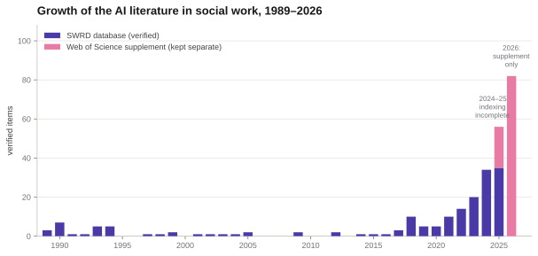
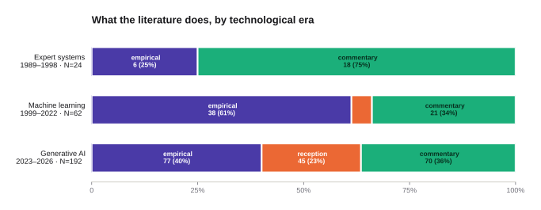
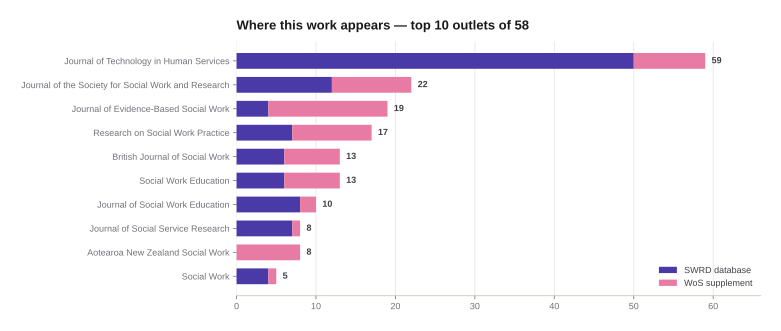
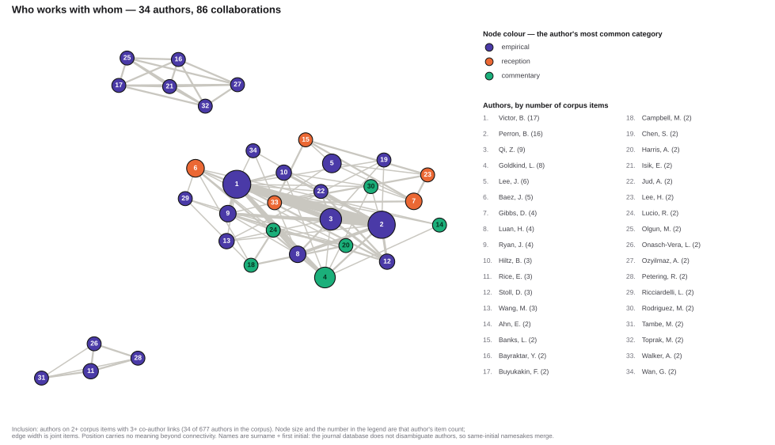

Every article on artificial intelligence in the disciplinary social work journals — found by search, verified by reading each abstract, and classified by what the study actually does rather than what it is about.
This page is a worked example of an analysis anyone can reproduce with the project's databases and a prompt. It shows a complete pipeline: cast a wide net, read everything, classify by a stated scheme, and publish the labels so a reader can disagree with you specifically rather than in general.
The finding underneath it is simple and easy to get wrong: social work has been writing about artificial intelligence for more than thirty-five years, and the current surge is the third wave, not the first. What has changed is not that the field discovered AI in 2023, but that the balance of the literature shifted — from describing systems, to building them, to studying how practitioners react to them.
It is easy to assume that generative chatbots are what artificial intelligence is. The record says otherwise. Two-thirds of the years in this corpus pre-date ChatGPT entirely, and the earlier work was neither speculative nor marginal — it built working systems that made recommendations in child welfare, diagnosis, and treatment planning.
An expert system encodes a specialist's decision rules — literally a structured set of if-then statements elicited from experienced practitioners — so that a computer can reach the same conclusion on a new case. This was the mainstream meaning of "AI" in the field's first wave, and social work engaged it directly: First generation expert systems in social welfare (1989), Expert systems: New tools for professional decision-making (1990), Desktop expert systems: Applications for social services (1993).
The second wave replaced hand-written rules with patterns learned from data. Social work researchers used neural networks and, later, machine learning to predict outcomes — and, characteristically, benchmarked them against the statistics the field already trusted: Predicting placement in foster care: A comparison of logistic regression and neural network models (2001), Predicting child physical abuse recurrence: comparison of a neural network to logistic regression (2003), Using artificial intelligence to model juvenile recidivism patterns (1994).
The third wave is the one most readers recognize: ChatGPT and its successors, applied to documentation, assessment, supervision, and education, and studied for how students and practitioners respond to them. It accounts for roughly seven of every ten articles in this corpus — a genuine surge, but one that arrives on top of a literature that had been running for three decades.
Boundary years are labeling conveniences, not discoveries. Expert-system work continues after 1998, and neural networks did not stop in 2022; each era is named for what dominated it.
The classification asks what a study does, not what it is about. Keyword topic alone cannot separate a team that built and tested a model from a team that surveyed practitioners' opinions about models, yet those are different kinds of knowledge. Every abstract was read and assigned to exactly one of three categories.
The study builds, applies, or tests a system on data. Running a model and measuring what it produces counts, including benchmarking an off-the-shelf tool such as ChatGPT against a task. Traditional statistics used alone do not count — a logistic regression is not artificial intelligence — though such models frequently appear as comparison baselines.
The study collects original data about people — attitudes, adoption, perceptions, readiness, concerns — without running a system itself. The object of study is the human response to the technology rather than the technology's performance.
Conceptual, ethical, educational, critical, or review writing that presents no original data. This is the field's argumentative literature: what AI would mean for practice, what it threatens, how curricula should respond.
The hard boundary in practice is between the first two. A study in which researchers prompt ChatGPT with case vignettes and then judge the answers is doing something to a system and measuring the result, so it is coded empirical even when the framing is evaluative. Eight articles produced genuinely split judgments and were decided by hand; they are marked in the released data.
Attention is real, uneven, and much older than the current wave.

Three features are worth naming. First, an early cluster: 22 articles appeared between 1989 and 1994, when expert systems were a live methodological project in human services. Second, a long trough: from 1995 through 2016 the topic nearly disappears from disciplinary journals, averaging under one article a year even as neural-network methods advanced elsewhere. Third, the surge: growth resumes around 2018 and accelerates sharply after the public release of ChatGPT in late 2022, with 2023–2026 alone accounting for 192 of the 278 articles.
The trough is the interesting part. It does not mean the field stopped thinking about computation; it means the disciplinary journals were not where that thinking was published. Read alongside the early cluster, the pattern suggests the field's engagement with AI is episodic and technology-triggered rather than cumulative.
Composition shifts across the three waves, and the shift is not the one people expect.

| Era | N | Empirical | Reception | Commentary |
|---|---|---|---|---|
| Expert systems · 1989–1998 | 24 | 6 (25%) | 0 | 18 (75%) |
| Machine learning · 1999–2022 | 62 | 38 (61%) | 3 (5%) | 21 (34%) |
| Generative AI · 2023–2026 | 192 | 77 (40%) | 45 (23%) | 70 (37%) |
| All years | 278 | 121 (44%) | 48 (17%) | 109 (39%) |
The first wave was overwhelmingly discursive: three-quarters of it argued about what expert systems could or should do, against a minority that built them. The second wave inverted that: 61% empirical, as researchers with neural networks and administrative data tested predictions against the field's existing statistical baselines. The third wave swings back toward talk — empirical work falls to 40% while commentary rises again — and introduces a category that barely existed before: reception studies, which jump from 3 articles in twenty-four years to 45 in four.
That last shift is the clearest signal in the data. Generative AI is the first wave of this technology that ordinary practitioners and students encounter directly, so for the first time the field is studying its own members' responses at scale rather than only the systems themselves.
278 articles spread across 58 journals, with a long tail: 23 outlets carry exactly one article.

| # | Journal | Total | Database | Supplement |
|---|---|---|---|---|
| 1 | Journal of Technology in Human Services | 59 | 50 | 9 |
| 2 | Journal of the Society for Social Work and Research | 22 | 12 | 10 |
| 3 | Journal of Evidence-Based Social Work | 19 | 4 | 15 |
| 4 | Research on Social Work Practice | 17 | 7 | 10 |
| 5 | British Journal of Social Work | 13 | 6 | 7 |
| 6 | Social Work Education | 13 | 6 | 7 |
| 7 | Journal of Social Work Education | 10 | 8 | 2 |
| 8 | Journal of Social Service Research | 8 | 7 | 1 |
| 9 | Aotearoa New Zealand Social Work | 8 | 0 | 8 |
| 10 | Social Work | 5 | 4 | 1 |
One journal dominates: the Journal of Technology in Human Services carries 59 articles, more than the next two combined, and has done so across all three eras — it was publishing expert-systems work in 1990 and generative-AI work in 2025. Beyond it, the literature is distributed rather than concentrated, appearing in generalist flagships (British Journal of Social Work, Social Work), research outlets (JSSWR, RSWP), and — notably in the newest cohort — education journals, consistent with a field working out what to teach.
A co-authorship network of the recurring authors, with the inclusion rule stated rather than tuned until it looked good.

The structure is one core plus satellites: a 24-author component holds most of the recurring names, with two small separate teams (five and four authors) working entirely apart from it. This is a young literature — the largest single output is 17 items and most recurring authors have two — so the network describes an emerging collaborative core rather than an established invisible college.
Colour marks each author's dominant category, and it reveals a division of labour: the empirical authors cluster with each other, the commentary-leaning authors sit toward the periphery of the core, and reception researchers appear mostly on the edges. Authors tend to specialize toward one end rather than mixing.
Read author counts as approximate. The journal database stores author names exactly as published, with no disambiguation, so identity here is surname plus first initial. Two different people who share both will be merged, and one person who published under different name forms may split. This is the one place in the demonstration where the underlying data cannot support a precise claim — the conference database, by contrast, carries canonical author IDs and would support one.
A wide keyword net was cast over titles and abstracts of the SWRD journal database, restricted to publication_year >= 1989 — the systematically compiled window of the database and of its published article. The net spanned era-appropriate vocabulary, from expert system and knowledge-based system through neural network, machine learning and predictive analytics to ChatGPT, large language model and generative AI, with word-boundary anchors on short tokens.
Every match was read; none were sampled. Roughly half of raw matches were false positives in nameable classes — "AI" as American Indian/Alaska Native or Appreciative Inquiry, "deep learning" as pedagogy, "neural network" as brain circuitry, "expert systems" in the sociological sense, and clinical data mining, which in social work denotes manual secondary analysis of case records rather than computation. A semantic recall audit using sentence embeddings then searched by meaning rather than wording, recovering additional in-scope articles that the keyword net missed — most of them from the pre-2000 era, where the modern vocabulary simply did not exist.
A keyword net can only find phrasings someone thought of, which is a serious problem across thirty-seven years of shifting vocabulary. The databases therefore also store a meaning vector for every abstract, so a query can be matched by sense rather than by string. Running that audit on this corpus recovered in-scope articles the net had missed — a 1990 review of automated assessment, a 1989 study of computers and social diagnosis, a 1993 computerized assessment system — none of which contain the phrase "artificial intelligence" anywhere in title or abstract.
EmbeddingGemma 300M (Google), served locally through Ollama as embeddinggemma:300m, producing 768-dimension vectors. Every abstract in both databases was embedded with this exact model, so query vectors must come from it too — a vector from OpenAI, Cohere, a different Gemma build, or another quantisation is not comparable and returns noise. There is no server-side embedding endpoint; the query vector is generated on your machine (~620 MB, downloaded once).
task: search result | query: {your question}; documents were embedded as title: … | text: …, already done. Omitting the query prefix is the most common mistake and degrades results badly. Similarity is cosine, 0–1: ≥ 0.55 is usually on topic, ≥ 0.65 strongly so. The search function returns roughly 40 rows per call regardless of the requested count, so deeper coverage comes from unioning several differently-worded statements of the same question.The model was not chosen by reputation. It was selected by benchmarking candidates on this corpus: every embedding model tested beat keyword retrieval, open-weight models matched or exceeded commercial APIs, and EmbeddingGemma had the best quality-to-size ratio for a model that runs on a laptop. semantic_audit.py in this folder performs the whole audit — it checks that Ollama is running with the right model, embeds several statements of the corpus definition, retrieves neighbours, and reports the candidates that are not already in the corpus. Scores nominate; a human still reads each candidate and admits it only with a note naming the vocabulary gap.
Each article was classified by reading its abstract against the three definitions above. To make the labeling checkable rather than asserted, the screening and classification were run four times independently by different AI systems working only from the published documentation, and the label recorded here is the majority judgment. 270 of the 278 articles carried a clear majority; the remaining 8 split evenly and were decided by a human reader. The released data file records every model's individual vote and flags the hand-decided cases, so any reader can see exactly where the classification was contested.
The database is a versioned release with an end date; the literature is not. To extend coverage past that date, the same keyword net was run in Web of Science over the same journal set for recent years, screened with the same discipline, and deduplicated against the database by DOI. Those records are kept in a separate file and are not merged into the database — the versioned release stays clean, and every count above reports the two sources separately.
What the supplement can and cannot see. Web of Science indexes a curated set of journals. Recent open-access titles, newer journals not yet accepted for indexing, regional and non-English journals, and some practice-facing outlets may be absent from it. The supplement therefore extends the time window but not necessarily the breadth of the original journal set, and articles published in venues outside Web of Science coverage will be missing from the 2025–2026 figures.
Treat the recent years as a lower bound, not a census — as with the 2024–25 database counts, where publisher indexing still lags.
Everything behind this page is in the folder it is served from — the labels, the raw candidate set, and four scripts that reproduce the analysis end to end.
python3 fetch_candidates.py.Only the screening and labeling steps are not scripted, because they are the steps that require reading. That is the honest boundary of automation here: the machine retrieves and proposes; a person decides.
No. Querying is plain HTTPS with a public read-only key, so a small model running locally can drive the whole retrieval pipeline — in building this demonstration, a 35-billion-parameter open-weight model on a laptop connected from the documentation alone, ran the keyword sweeps and SQL, and produced a screened corpus of comparable size to the frontier models. Where model capability told was not access but judgment at volume: consistency in applying the three category definitions across hundreds of abstracts, and care with bookkeeping. Use whatever model you like to query; check the classification work regardless of what produced it.
Social Work Meta-Data Project · University of Michigan School of Social Work · project home · repository
Counts on this page were computed from the released data file and reflect the corpus as of the 2026 database release plus the Web of Science supplement.